操作系统笔记06 CPU调度
基本概念
- CPU调度是多道程序操作系统的基础。通过在进程之间切换CPU，操作系统可以提高计算机的吞吐率。
- 在内核级支持线程的操作系统中，是线程被操作系统调度，而不是进程。
- 调度是操作系统的基本功能。 几乎所有的计算机资源在使用前都要调度。 CPU调度对操作系统设计来说很重要。
CPU- I/O 区间周期
- CPU的成功调度依赖于进程的如下属性：
- 进程执行由CPU执行和 I/O 等待周期组成
- 进程在这两个状态之间切换。
- 由CPU区间开始- I/O 区间 -..-最后的CPU区间通过系统请求终止执行。
- CPU区间时间曲线图：通常为指数/超指数形式，具有大量短CPU区间和少量长CPU区间。 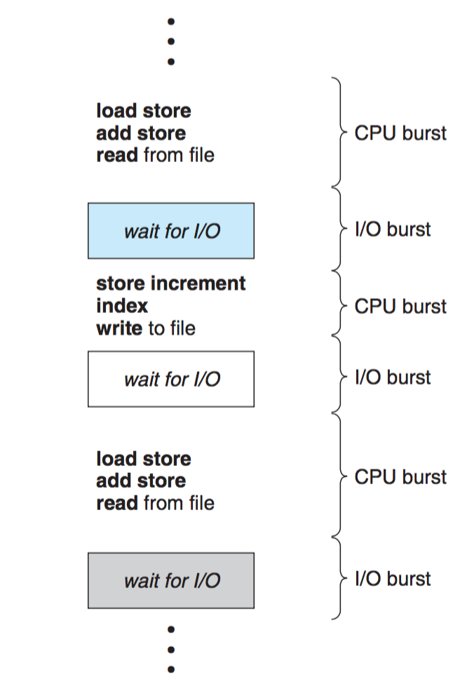 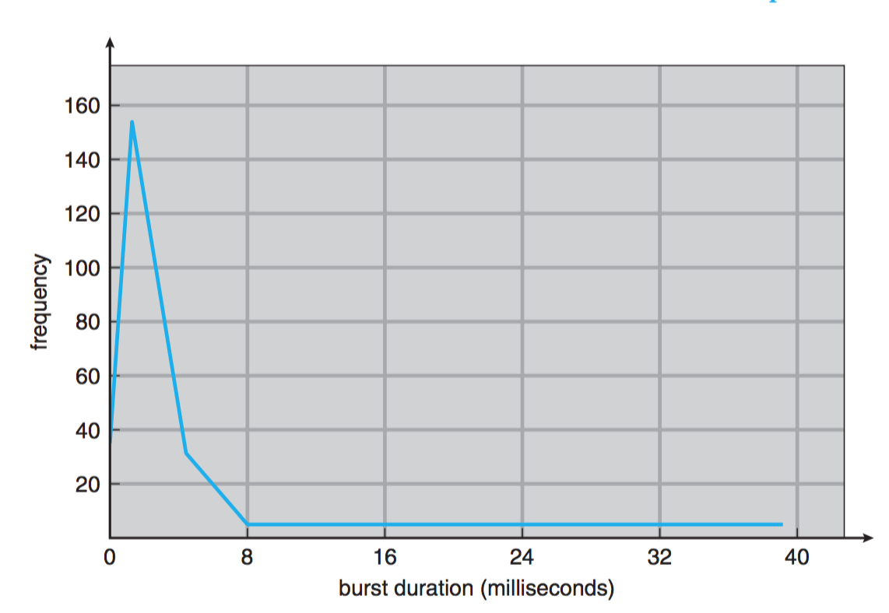
CPU调度程序
- 每当CPU空闲时，操作系统就必须从就绪队列中选择一个进程来执行。晋城选择由短期调度程序或CPU调度程序来执行。
- CPU调度决策可在如下4种情况下发生：
- 当一个进程从运行切换到等待状态。
- 当一个进程从运行状态切换到就绪状态。
- 当一个进程从等待切换到就绪状态。
- 当一个进程终止。
- 当调度只能发生1和4两种情况下，称调度方案是非抢占的/协作的，否则，称调度方案是抢占的。
- 抢占调度：对访问共享数据是有代价的，对操作系统内核的设计也有影响。
调度标准
- CPU使用率：使CPU尽可能忙。
- 吞吐量：一个时间单元内所完成的进程的数量。
- 周转时间：从进程提交到进程完成的时间段。
- 等待时间：进程在就绪队列中等待的时间量。
- 响应时间：从提交请求到产生第一个响应所花费的时间量。
调度算法
先到先服调度(FCFS)
- 先请求CPU的进程先分配CPU
- 非抢占：一旦CPU被分配给了一个进程，该进程就会保持CPU直到释放CPU位置。
- 1 - 2 - 3进程等待时间: P1 = 0; P2 = 24; P3 = 27; 平均等待时间: (0 + 24 + 27) / 3 = 17
- 2 - 3 - 1进程等待时间: P1 = 6; P2 = 0; P3 = 3; 平均等待时间: (6 + 0 + 3) / 3 = 3 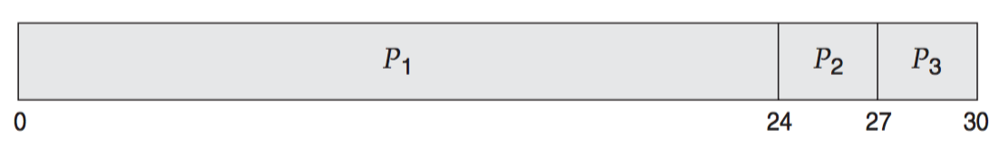 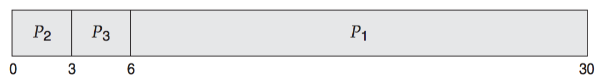
最短作业优先调度(SJF)
- 将每个进程与其下一个CPU区间段相关联。当CPU为空闲时，它会赋给具有最短CPU区间的进程。
- SJF调度算法可证明为最佳，对给定的一组进程，平均等待时间最短。
- 具有理论价值，无法实现，因为没有办法知道下一个CPU区间的长度。
- 两种方案：
- 非抢占：一旦CPU给予该进程，它就不可能被抢占。eg. 平均等待时间: (0 + 6 + 3 + 7)/4 = 4.
- 抢占：如果一个到达的新的进程CPU区间长度小于当前执行进程的剩余时间，则抢占。也被称为最短剩余时间优先（SRTF）调度。eg. 平均等待时间: (9 + 1 + 0 + 2)/4 = 3.
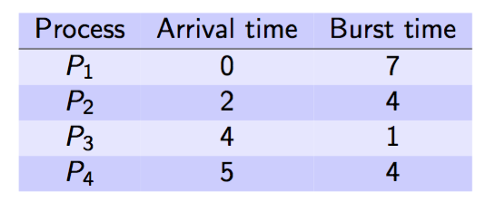 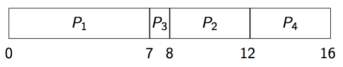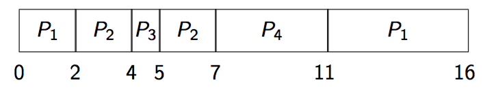
优先级调度
- 每一个进程都有一个优先级与其关联。具有最高优先级的进程会分配到CPU。
- 优先级通常为固定区间的数字。此处用小数字表示高优先级。
- SJF算法是优先级调度的一个特例，其优先级为下一个CPU区间的倒数。CPU区间越大，优先级越小。
- 优先级调度可以是抢占或非抢占的
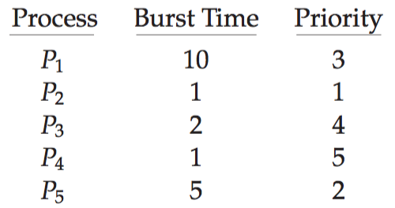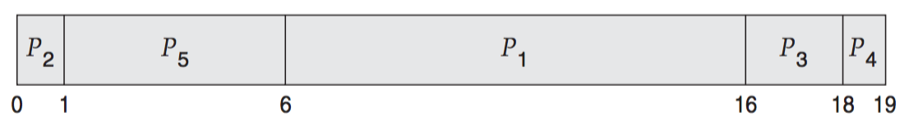 - 存在的问题
- 饥饿/无穷阻塞：低优先级进程可能永远不会执行。
- 优先级反转：高优先级进程需要访问资源，被另一个优先级较低的进程持有，该低优先级进程不运行则不释放资源。
- 解决办法
- 老化：逐渐增加在系统中等待很长时间的进程的优先级。
轮转法调度(RR)
- 轮转法调度算法专门为分时系统设计。类似FCFS调度，但增加了抢占以切换进程。
- 定义一个较小时间单元，称为时间片，通常为10-100ms。
- 将就绪队列作为循环队列。CPU调度程序循环就绪队列，为每个进程分配不超过一个时间片的CPU。
- 进程只需要小于时间片的CPU区间，释放CPU，继续就绪队列的下一个进程。
- 进程的CPU区间比时间片长，经过这段时间片的CPU区间，进程被抢占并加入到就绪队列的末尾。
- 如果在就绪队列中有n个进程并且时间量为q，那么每个进程会得到 1 / n 的CPU时间，其长度不超过q时间单元。每个进程必须等到的CPU时间不超过 ( n - 1 ) q 个时间单元，直到它的下一个时间片为止。
- 性能很大程度上依赖于时间片的大小
- 时间片非常大 ➡ FCFS
- 时间片很小 ➡ 时间片要比上下文切换时间长，否则开销太高。
多级队列调度
- 就绪队列被分成多个独立队列。
- 根据进程的属性，如内存大小、进程优先级、进程类型etc，一个进程被永久地分配到一个队列。
- 每个队列有自己的调度算法
- eg. 前台队列（用于交互式进程）使用RR算法调度，后台队列（用于批处理）使用FCFS算法调度。 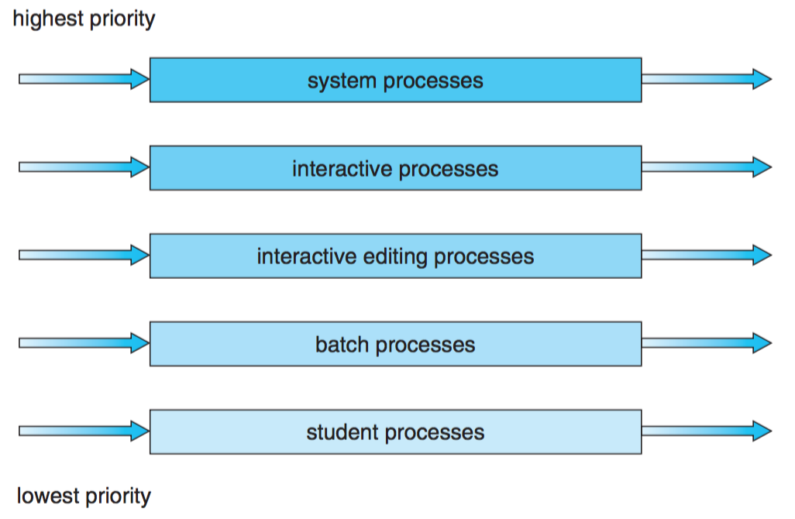
多级反馈队列调度
- 一个进程可以在各个队列之间移动。
- eg. 如果进程使用过多CPU时间，那么它就被转移到更低优先级队列。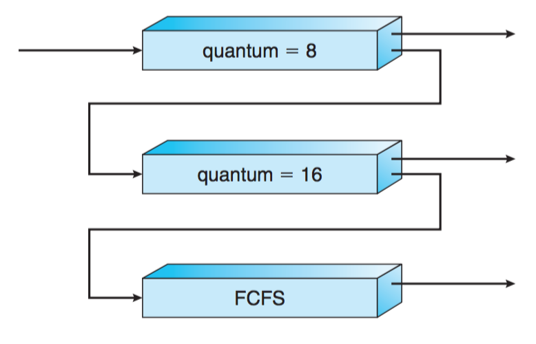
总结
- 在实践中正确实施比在原则上正确实施要困难得多。因此，调度程序很少做出最佳选择。
- 解决方案：调度策略和调度机制的分离。也就是说，调度算法以某种方式被参数化，但参数可以由用户填写。
All articles in this blog are licensed under CC BY-NC-SA 4.0 unless stating additionally.